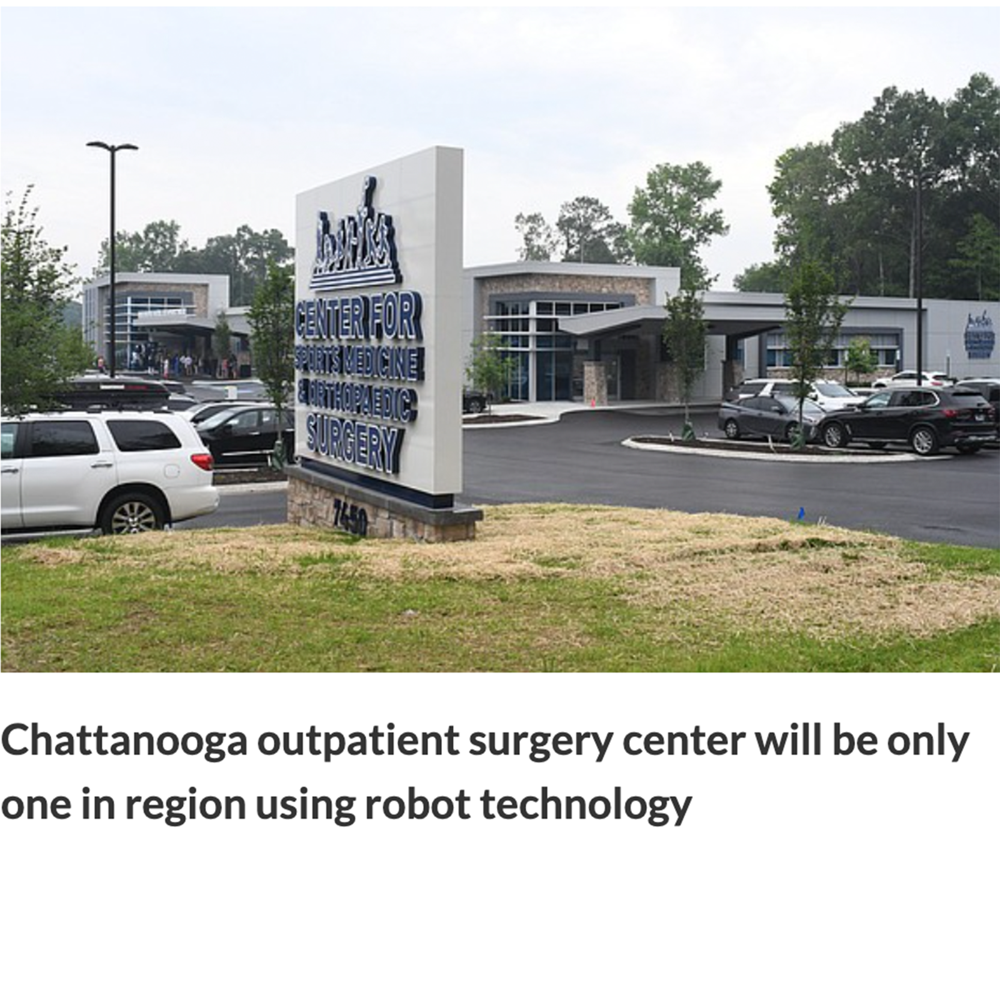
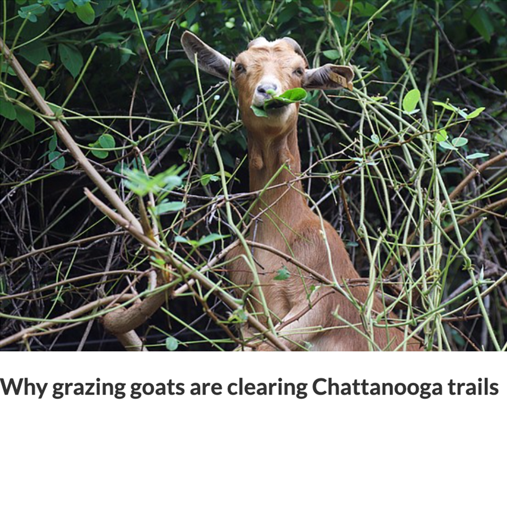

Riders had one glaring issue with Centro’s service: infrequent bus schedules create slack time in their day.

A woman from the Kyiv oblast shares her culture with host family in Central New York.

When war broke out in Ukraine, Oleg Grabovyy left Central New York and joined soldiers on the front lines.

Ukrainian American college students share feelings of conflict between upholding school responsibilities while supporting Ukraine amid war.
In front of a capacity crowd at Onondaga Community College, the President discusses the proposed massive semiconductor chip manufacturing plant in Central New York.

From Buried Acorn to Willow Rock, there is no shortage of local autumn brews on tap in the Syracuse area.

The first week of October greeted us with brand-new bops from favorite artists like Hozier, The Backseat Lovers, Dayglow and more.
House gigs are part of nightlife on Syracuse University’s campus, and student organizations are funding the music scene with their own money.


When re-entering the community after incarceration, people need resources and support to get back on their feet. For the adult population in this position there are organizations that provide such opportunities — but for youth, there is a lack of specialized programming to help when they are set to return home.

Anyone who walks by Phyllis Riles’ office is met with the sweet scent of the air freshener she sprays across the room. Vibrant curtains and purple flowers adorn the window and desk, decorating what was once a gray room with bursts of life.
This piece was originally written for The Stand, Syracuse's Southside newspaper, and then it was co-published in The Crime Report.
Denise Welch loves her house. She has her own sidewalk, her own driveway and her own fence. Not only does she own her home, but she also owns four additional properties on Baker Avenue. Five years ago, owning a home was nowhere on her radar, because as a single mom of two grown sons, a soaring rent increase had priced her out of her apartment.
Syracuse, N.Y.— Azian Goodrich got a special gift for his 18th birthday: A ballot.


Browse clips from my editorial internship at my hometown paper in high school.